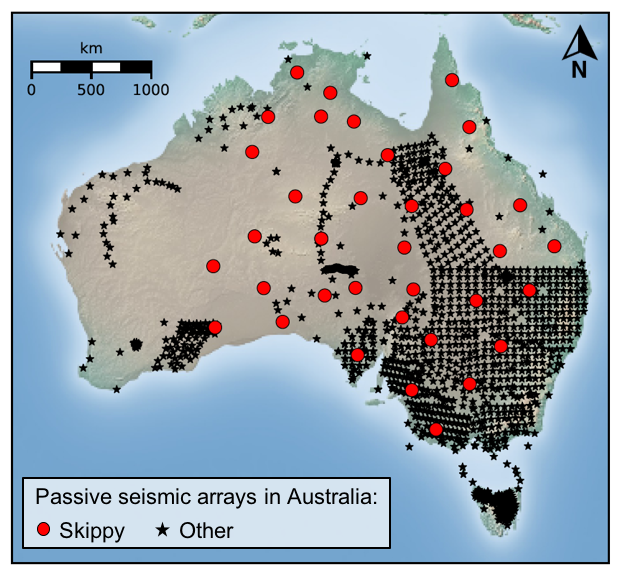

The SKIPPY seismic array: Exploring the Seismic Structure in 3D beneath Australia
How to cite SKIPPY data ? Reference: Rob van der Hilst and Brian Kennett (1993): SKIPPY. Australian Passive Seismic Server - Australian National University. Other/Seismic Network.
doi:
10.7914/SN/7B_1993

The SKIPPY experiment [Van der Hilst and Kennet, 1993] was conducted between January 1993 and December 1996 to explore the three-dimensional structure of the Earth's mantle and lithosphere beneath the Australian continent. SKIPPY was a the first transportable array aiming at covering the Australian continent with stations spaced by about 400 km. During each stage of the experiment, 8 to 12 brodband seismometers (Guralp CMG-3ESP and Reftek) were deployed across different regions of Australia. The motion of arrays from region to region led to the name Skippy, following the iconic Aussie TV series "Skippy The Bush Kangaroo".
Funding sources: Research School of Earth Sciences, ANU
Access data
Read more about SKIPPY:
- Van der Hilst, R., Kennett, B., Christie, D., and Grant, J. (1994). Project Skippy explores lithosphere and mantle beneath Australia. EOS, Transactions American Geophysical Union, 75(15), 177-181. doi: 10.1029/94EO00857
- Zielhuis, A. and Van der Hilst, R. D. (1996). Upper-mantle shear velocity beneath eastern Australia from inversion of waveforms from SKIPPY portable arrays. Geophysical Journal International, 127(1), 1-16. doi: j.1365-246X.1996.tb01530.x
- Kennett, B.L.N. (1997), The mantle beneath Australia. AGSO Journal of Australian Geology and Geophysics, 17(1), 49-54. Link to PDF